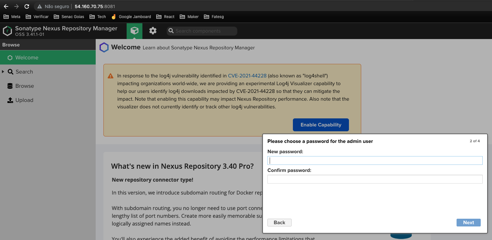
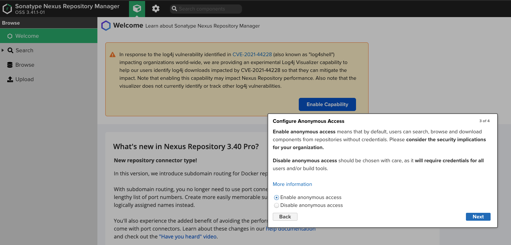

Nexus
Execute os passos abaixo para configuração do Nexus
Criando a máquina
Nome: Nexus Máquina SO: Ubuntu Server 22.04 LTS amd64 Máquina Type: T2 Small

Instância
Logo em seguida aguarde a instância ficar disponível

Criar IP
Precisamos criar um IP Elástico (Externo)
Conforme a imagem abaixo clique no menu Rede e Segurança -> Ip´s Elasticos
clique em Alocar endereço IP elástico

Depois clique em Alocar

verifique o ip atribuido

Associar IP
Agora precisamos associar esse IP a instância do Nexus

Escolha a instância do Nexus na lista de Instâncias e clique em Associar

Regras de Segurança
Para acessar as regras de segurança acessse o menu Rede e Segurança -> Grupo
Então vá no menu Rede e Segurança -> e selecione o grupo de segurança designado para a instância do Nexus
no menu Ações selecione Editar Regras de Entrada

Precisamos liberar as portas do Nexus por se tratar de apenas um exercício vamos liberar todas as portas, mas se atente em liberar em produção apenas as portas necessárias.
Então para isso Troque o valor da regra de entrada para aceitar todas as entradas conforme abaixo e clique em Salvar Regras

Acessando a instância
Selecione a instância do Nexus clique em Conectar

Informe o usuário no campo como root depois clique em Conectar

Instalando o Nexus
#Instalando o Java
apt update
apt install -y openjdk-8-jdk
java -verison
#Adicionando o usuario
useradd -d /opt/nexus -s /bin/bash nexus
passwd nexus
#coloque a senha nexus
#repita a senha nexus
#Configurando limites
ulimit -n 65536
vim /etc/security/limits.d/nexus.conf
#coloque o valor abaixo
nexus - nofile 65536
#salve o arquivo
ulimit -a
#deve ter a linha com o valor -> open files (-n) 65536
#Baixando o nexus
wget https://download.sonatype.com/nexus/3/nexus-3.41.1-01-unix.tar.gz
#Descompactando o nexus
tar xzf nexus-3.41.1-01-unix.tar.gz
#Movendo as pastas
mv nexus-3.41.1-01 /opt/nexus
mv sonatype-work /opt/
#Configurando o nexus
vim /opt/nexus/bin/nexus.rc
#substitua o valor #run_as_user="" para run_as_user="nexus"
#salve o arquivo
vim /opt/nexus/bin/nexus.vmoptions
#altere os valores abaixo
#na linha -Xms2703m mude para -Xms1024m
#na linha -Xmx2703m mude para -Xmx1024m
#na linha -XX:MaxDirectMemorySize=2703m mude para -XX:MaxDirectMemorySize=1024m
#salve o arquivo
cd /opt/sonatype-work/nexus3
mkdir etc
cd etc
vim nexus.properties
#informe o valor abaixo
application-host=0.0.0.0
#salve o arquivo
vim /etc/systemd/system/nexus.service
#adicione as linhas abaixo
[Unit]
Description=nexus service
After=network.target
[Service]
Type=forking
LimitNOFILE=65536
ExecStart=/opt/nexus/bin/nexus start
ExecStop=/opt/nexus/bin/nexus stop
User=nexus
Restart=on-abort
[Install]
WantedBy=multi-user.target
#salve o arquivo
#Atribuindo permissao ao usuario nexus
chown -R nexus:nexus /opt/nexus /opt/sonatype-work
#Iniciando o servico
systemctl daemon-reload
systemctl start nexus
systemctl enable nexus
systemctl status nexus
cat /opt/sonatype-work/nexus3/admin.password
#copie o valor para informar no login
exit
Acessando o Nexus
Pelo IP apresentado na instância do Nexus como abaixo

Acesse no seu browser o endereço
http://{ip da instancia}:8081
Então entre na opção sign in
Informe o usuairo : admin
e a senha que vc copiou do arquivo admin.password

Informe uma nova senha admin
por enquando deixe o acesso como anônimo
Pronto por enquanto finalizamos as configurações do Nexus